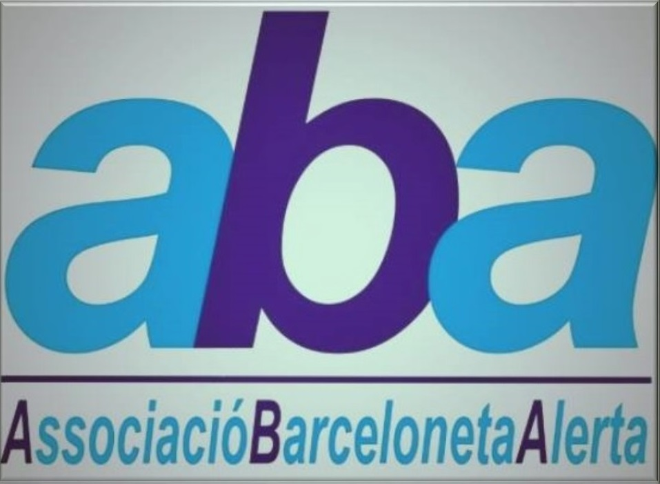
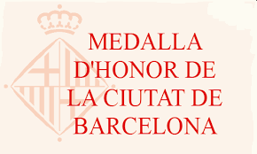

Petita presentació de l'Associació.
Història breu de l'associació.
Contacte ABA


Objectius de l'associació
Promoure projectes de treball i estudi comunitari al barri de la Barceloneta i,
concretament, per a la gent gran.
Facilitar i mantenir relacions amb les administracions públiques i amb qualsevol
altre
organisme, públic o privat, en qualsevol assumpte que pugui interessar a
l’Associació o a
les
entitats sòcies.
Coordinar les activitats del voluntariat, de les entitats associades o de les que
puguin
associar-
se en relació als projectes propis de l’Associació.
Qualsevol mena d'activitats de promoció i desenvolupament en el barri de La
Barceloneta
que
pugui acordar en el futur, incloent-hi la posada en marxa d'activitats econòmiques
relacionades amb aquelles activitats.
Promoció de la inserció laboral al barri, creació d'eines de formació de persones en
risc
d'exclusió social, així com accions per facilitar la incorporació dels joves al
mercat
laboral.
Per aconseguir les seves finalitats es valdrà dels mitjans i recursos lícits que en cada
cas
consideri més adients i realitzarà les activitats següents:
Promoure campanyes informatives i divulgatives amb edició i difusió de
comunicacions
en
els
formats i mitjans actuals i/o futurs que determini com més adients en cada moment
(p. ex.
circulars, publicacions, etc., en format físic o format electrònic) i amb la
periodicitat
que
consideri més idònia.
Promoure punts d'informació, comparèixer en mitjans de comunicació o tribunes
públiques i
efectuar altres activitats anàlogues i/o similars que estimi oportunes.
Promoure, participar i col·laborar en la creació de projectes relacionats amb
activitats
econòmiques, tenint en compte sempre i en tot cas el marc legal que
correspongui,
que no
existeixi ànim de lucre i que els beneficis es destinin a enriquir la xarxa
social
del barri
o a
altres projectes de l'Associació.
Realitzar accions amb els seus propis medis o en col·laboració amb altres entitats
afins,
de
formació, inserció laboral, desenvolupament local, inclusió social i de qualsevol
altre
tipus que
afavoreixen l'enfortiment social del barri, la seva cohesió, la lluita pels
drets
socials i en general
la defensa dels valors de l'Associació.
Valors de l'associació
ABA promou la justícia, la solidaritat i el “bon veïnatge”.
Des de la seva fundació, la promoció dels valors de solidaritat, suport mutu i “bon
veïnatge” són el motor de l’associació; els valors que més la identifiquen. La
solidaritat
veïnal està fonamentada en la defensa de la justícia i els drets socials.
Històricament, la
nostra associació ha posat el focus, de manera prioritària, en la preocupació per la
gent gran del barri, sense deixar de banda els altres sectors de població.
ABA promou el desenvolupament comunitari.
La nostra associació participa i promou activament, a través de l'eina del Pla
Comunitari, el treball en xarxa i la col·laboració de tots els agents socials (veïns
i
veïnes, associacions, serveis públics, institucions i empreses) per a la promoció
del
desenvolupament comunitari. L'enfortiment de la comunitat, el barri, per articular
respostes col·lectives orientades al bé comú és un valor fonamental de l'entitat.
ABA és una entitat laica i no té filiació política.
Les diferents conviccions religioses i polítiques que posseïm els participants en el
projecte no deuen incidir en la nostra comesa, pel que no podem realitzar cap tipus
de
proselitisme religiós o polític en relació amb qualsevol de les persones que
participen
en els nostres projectes, ja siguin beneficiaris, voluntaris, assalariats, membres
d'altres
entitats o representants de l'administració.
ABA aposta per la defensa de la diversitat i la dignitat de totes les
persones.
Apostem per una societat plural i diversa, rica i canviant que constitueix el barri
de la
Barceloneta.